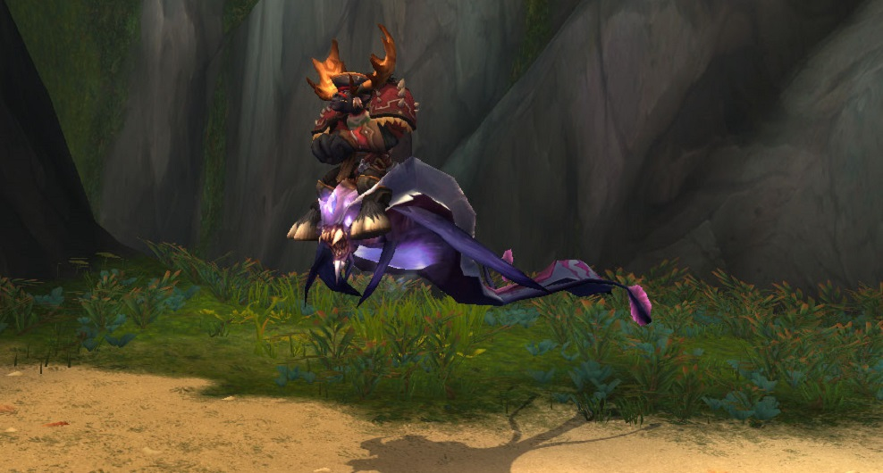

Les differents modeles de monture de Burning Crusade
Les Talbuks
Les talbuks sont des montures apparues à l'extension The Burning Crusade par le biais de la réputation des Mag'har et d'Halaa. Afin de vous les procurer, vous devez récolter un certain nombre de perles d'obsidienne en tuant des ogres dans la zone Nagrand, en Outreterre.
Une fois cela fait, il vous suffit de rendre une quête répétable jusqu'à atteindre le seuil de réputation "Exalté" : vous pouvez maintenant acheter 6 modèles de Talbuks.
Modèle 1
Modèle 2
Modèle 3
Modèle 4
Modèle 5
Modèle 6
Il en reste cependant deux autres mais qui s'obtiennent d'une manière très différente. Pour cela, vous devrez réaliser du pvp dit "Sauvage" (c'est à dire en zone ouverte) afin de récolter des insignes permettant d'acheter les deux coloris restants. Il existe cependant un moyen d'obtention plus simple depuis l'extension Warlords of Draenor puisque certaines missions rares de votre fief permettent d'en obtenir.
Le Talbuuk noir d'Halaa Le talbuk noir en armure d'Halaa
Les drakes du néant
Les premiers drakes à être apparus dans World of Warcraft sont les drakes du néant de Burning Crusade (puisque pendant Vanilla, il était impossible de voler). Ces drakes sont les récompenses d'une réputation, la faction de l'aile du néant.
Cette dernière, située au fin fond de la Vallée d'Ombrelune en Outreterre, sera d'abord hostile auprès de vous ! Il faudra commencer par gagner leur confiance puis mesurer votre force à celle de leurs généraux afin de prouver votre valeur.
S'en suit ensuite une trèèèès longue suite de quête journalière à accomplir : 5 quètes par jour, 250 points de réputation chacune et plus de 56 000 de réputation à monter : je pense que les chiffres parlent d'eux même...
Modèle 1
Modèle 2
Modèle 3
Modèle 4
Modèle 5
Modèle 6
Il est cependant possible d'accélérer votre montée en réputation grâce à une petite astuce ! Près du campement se trouve une mine, et en cherchant bien, vous pouvez y trouver (assez rarement) des Oeufs de l'aile du néant. Une fois en votre possession, ces derniers débloquent une quète répétable vous donnant à nouveau 250 points supplémentaires.
Attendre plusieurs mois de quêtes journalières ou passer vos jours dans une mine, à vous de choisir ! Mais ce qui est sûr, c'est que ces magnifiques modèles de monture valent bien toutes ces options ...
Les raies du néant
La plupart des montures de The Burning Crusade s'obtiennent à l'aide de réputations ; les raies du néant ne font pas exception !
Ces dernieres peuvent s'obtenir dans la Foret de Terokkar, a l'est de Shattrath , la capitale d'Outreterre. Pour cela, il faut simplement réaliser une suite de quelques quêtes qui vous débloquera des quêtes répétables
La prochaine étape est de tuer en boucle des Arakkoas (hommes-oiseaux) afin qu'ils vous donnent une certaine poudre. Avec 20 de ces poudres, vous pouvez invoquer un monstre rare à l'aide d'un rituel qui,lui, vous permet d'obtenir un objet rapportant 500 points de réputation.
Avec 20 points de réputation gagnés par monstre tués, 125 par monstre rare et 500 par objet rendu, les raies feront partie de votre collection en un clin d'oeil !

Les montures rares de raid et de donjon
Anzu et les salles de Sethekk
Près de Shattrath se trouve un étrange lieu nommé "Auchindoun" : une vaste étendue de poussière et de ruines. Au centre se trouve une immense construction presque détruite qui abrite les portails d'entrée de 5 donjons, dont Les Salles de Sethekk.
Auchindoun, le point de départ de nombreux donjons
Ce donjon, une fois passé en mode héroïque, possède un boss supplémentaire nommé Anzu.
Apparaissant entre le deuxieme et troisième boss, ce dernier a un petit pourcent de chance de vous donner les Rênes du Seigneur corbeau.
Vous pouvez réaliser ce donjon une fois par jour sur chacun de vos personnage, quelques semaines à peine suffiront pour obtenir cette magnifique monture. (Même s'il m'a personnellement fallu 684 essais)
Kael'thas le Haut magistere, deux montures pour le prix d'une?
Ce boss assez important dans l'histoire de World of Warcraft apparait à deux reprises pour vous donner à chaque fois une chance d'obtenir une monture.
Le faucon pérégrin blanc rapide
A la Terrasse des Magistères, Kael'Thas pourra vous donner à 5% la monture Faucon pérégrin blanc rapide, appelée "Le poulet rapide" !
Vous pouvez également le retrouver dans le Donjon de la Tempête où il pourra vous accorder une monture qui mettra à l'épreuve la rétine de toutes les personnes que vous croiserez en la chevauchant : Al'ar
Les Cendres Al'ar
Karazhan
Anciennement connu comme le répère des Mages du kirin tor, Karazhan a été implémenté en tant que raid dans l'extension Burning Crusade.
Vous pouvez y retrouver Attumen le Veneur, un cavalier chevauchant un cheval embrasé. En le tuant d'une façon particulière, vous aurez 1% de chance d'obtenir en tant que monture le cheval dont il était le maître !
La cheval d'Attumen Le Veneur
L'hippogriffe cenarien
Dans le marécage de Zangar se trouve la réputation L'expédition cénarienne, un regroupement de druide défendant leurs intérêts. Afin de leur prouver votre valeur, vous devrez vaincre les boss de différents donjons sous-marins qui augmenteront votre réputation.
Après une trentaine de donjons écumés, vous atteindrez le palier maximum Exalté et pourrez enfin acheter ce modèle quasi unique : l'hippogriffe Cénarien !